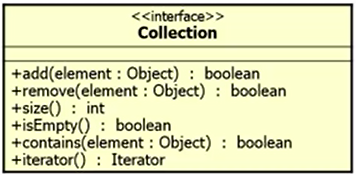
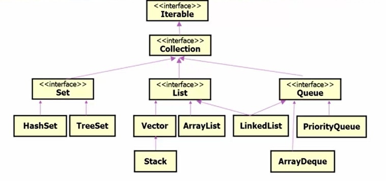

java.lang: Java语言的核心类库
java.util: 实用工具
java.io: 标准输入/输出类库
java.awt, java.swing: 图形用户界面(GUI)的类库
java.net: 网络功能的类库
java.sql: 数据库访问的类库
Object类是所有类的直接或间接父类，这让所有的类有了一致性。
“==”是引用是否相等
“equals”是内容(含义)相等
1 | Integer one = new Integer(1); |
如果覆盖equals()方法，一般也要覆盖hashCode()方法
getClass()方法是final方法，它不能被重载
它返回一个对象在运行时所对应的类的表示
1 | void PrintClassName(Object obj){ |
主要用来返回对象的字符串表示
常用于显示System.out.println(person);
另外，用于字符串的加号"current person is " + person
通过重载toString()方法，可以适当地显示对象的信息以进行调试
用于在垃圾收集前清除对象
与线程相关，pass
Java的基本数据类型用于定义简单的变量和属性将十分方便，但为了与面向对象的环境一致，Java中提供了基本数据类型的包装类(wrapper)，它们是这些基本类型的面向对象的代表。
与8种基本数据类型相对应，基本数据类型的包装类也有8中，分别是：
出了上述特点外，有的类还提供了一些使用的方法以方便操作
Integer I = 5;
I = Integer.valueof(5);int i = I;
I = I.intValue();Math类用来完成一些常用的数学运算
|Math类代码|注释|
|:——–|:—|
|public final static double E;|//数学常量e|
|public final static double PI;|//圆周率常量|
|public static double abs(double a);|//绝对值|
|public static double exp(double a);|//参数次幂|
|public static double floor(double a);|//不大于参数的最大整数|
|public static double IEEE remainder(double f1, double f2);|//求余|
|public static double log(double a);|//自然对数|
|public static double max(double a, double b);|//最大值|
|public static double min(float a, float b);|//最小值|
|public static double pow(double a, double b);|//乘方|
|public static double random();;|//产生0和1(不含1)之间的伪随机数|
|public static double rint(double a);|//四舍五入|
|public static double sqrt(double a);|//平方根|
|public static double sin(double a);|//正弦|
|public static double cos(double a);|//余弦|
|public static double tan(double a);|//正切|
|public static double asin(double a);|//反正弦|
|public static double acos(double a);|//反余弦|
|public static double atan(double a);|//反正切|
在Java中，系统属性可以通过环境变量来获得
在命令行运行Java程序时可使用-D选项添加新的系统属性
字符串可以分为两大类：
注意：在循环中使用String的+=可能会带来效率问题
String类对象保存不可修改(immutable)的Unicode字符序列
Jdk1.5增加了format函数：
%1$,8.5f—%序号$标识 宽度及精度 转换方式
序号：1
标识：,(表示千分位)
宽度及精度：8.5
转换方式：f
除了immutable特点外，还要注意String常量的内部化(interned)问题
即这样字符串常量是合同的(是指向同一个引用的)
以保证”abc” == “abc”
但是”abc” != new String(“abc”)
StringBuffer类对象保存可修改的Unicode字符序列：
StringBuilder类似，它效率更高，不考虑线程安全性
构造方法
实现修改操作的方法：append, insert, reverse, setCharAt, setLength
java.util.StringToken类提供了对字符串进行分割的功能。
构造：StringTokenizer(String str, String delim);
该类的重要方法有：
public int countTokens();//分割串的个数public boolean hasMoreTokens();//是否还有分割串public String nextToken();//得到下一分割串注：String类的matches, replaceAll, split可以使用正则表达式
Calendar:
Calendar.getInstance()//Lovale.ZH.get(DAY_OF_MONTH)|.getDisplayName(DAY_OF_WEEK).set|.add(HOUR, 1)|.roll(MONTH, 5).setTime(date)|.getTime()Date:
new Date()|new Date(System.currentTimeMillis()).setTime(long)|.getTime()SimpleDateFormat(“yyyy-MM-dd HH:mm:ss”):
.format|.parsejava.time.*java.time.format.*
|主要的类||
|-|-|
|Instant|时刻|
|Clock|时区|
|Duration|时间段|
||DateTimeFormatter|
|常用的类|LocalDateTime|
|LocalDate|LocalTime|
|方法|.of .parse .format|
| .plus|.minus|
||
Collection API提供”集合” “收集”的功能，并包含一系列的接口和类
Collection API包含三大类：
Collection接口：

Collection层次结构：

List接口：线性表 (linear list)
List接口：
1 | public interface List<E> extends Collection<E>{ |
迭代器Iterator(所有的Collection都能产生)
在JDK1.5以后，增强的for语句(enhanced for)或者叫for-eachfor(Element e: list) doSomething(e);
1 | for(Photo photo: album){ |
编译器生成了Iterator的while(hasNext()){…next()}
是遵循”后进先出”(Last In First Out, LIFO)原则
重要线性数据结构
包含三个方法
public Object push(Object item):将指定对象压入栈中public Object pop():将栈最上面的元素从栈中取出，并返回这个对象public boolean empty():判断栈中没有对象元素重要的实现是LinkedList类
||可抛出异类的|返回元素的|
|-|-|-|
|Insert(插入)|add(e)|offer(e)|
|Remove(移除)|remove()|poll()|
|Examine(检查)|element()|peek()|
Vector, 现多用ArrayList
Stack，现多用LinkedList
Hashtable，现多用HashMap
Enumeration，现多用Iterator
Set集
Set中对象不重复，即：
Hashtable的实现：
String对象的哈希码根据以下公式计算：s[0]*31^(n-1)+s[1]*31^(n-2)+...+s[n-1]
使用int算法，这里s[i]是字符串的第i个字符，n是字符串的长度，^表示求幂。(空字符串的哈希值为0)
一般在覆盖时，要同时覆盖hashCode、equals方法
Map是键-值对的集合
Map类的重要实现
HashMap类
TreeMap类：用红黑树的算法
Map层次结构(简化)
!()[03.png]
自编程序排序与查找：如冒泡排序、选择排序、快速排序等。
系统已有的排序与查找：如Arrays类及Collections类。
Arrays类是用于对数组进行排序和搜索的类：
Arrays类提供了sort()和binarySearch()
执行binarySearch()之前应调用sort():
1 | public static void sort(List list); |
关于比较：
1 | public int compare To(Object obj){ |
1 | public int compare(T o1, T o2); |
此类完全由在collection上进行操作静态方法组成
如sort, binarySearch, reverse等
更一般地，使用Lambda表达式
常用的几种算法，属于”通用算法”，遍试、迭代、递归和回溯。
遍试(穷举，exhaust algorithm)
在有限的范围内，可以对所有的值都进行试验和判断，从而找到满足条件的值
遍试算法基本模式：for( ; ; ){ if(); }
迭代(iterative)
是多次利用同一公式进行计算，每次将计算的结果再代入公式进行计算，从而逐步逼近精确解
迭代的基本模式：while(){ x = f(x); }
递归(recursive)就是一个过程调用过程本身
再递归调用中，一个过程执行的某一步要用到它的上一步(或上几步)的结果
递归算法基本模式：f(n){ f(n-1); }
回溯(back-track)
回溯法也叫试探回溯法：
回溯法的基本模式：x++; if(...) x--;